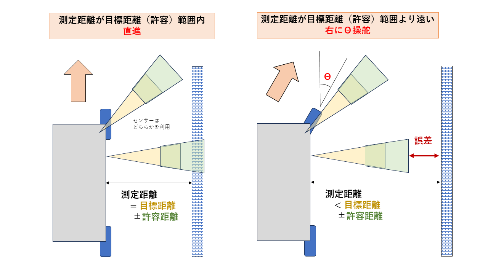

判断
自動運転の2番目のステップ「判断」について学びます。
判断とは
判断とは、認知で得た情報をもとに「どう動くか」を決めることです。人間で言えば「考える」に相当します。
graph LR
A[認知結果] --> B[判断ロジック]
B --> C{どう動く?}
C -->|左に障害物| D[右に曲がる]
C -->|前に障害物| E[止まる/回避]
C -->|障害物なし| F[直進]身近な例
- 信号機: 赤なら止まる、青なら進む
- ゲームAI: 敵が近づいたら攻撃、遠ければ追跡
- エアコン: 室温が高ければ冷房、低ければ暖房
判断方式の比較
判断方法には大きく2つのアプローチがあります。
ルールベース（プログラム）
人間が「こういう時はこうする」というルールを明示的に書く方法です。
| メリット | デメリット |
|---|---|
| 動作が明確で予測可能 | 複雑な状況への対応が難しい |
| デバッグしやすい | ルールの数が爆発的に増える |
| 少ないデータで動作 | 人間が全パターンを考える必要 |
ニューラルネットワーク（機械学習）
人間の運転データを学習して、AIが判断する方法です。
| メリット | デメリット |
|---|---|
| 複雑なパターンを学習できる | 大量の学習データが必要 |
| 人間が気づかないパターンも発見 | 判断理由が分かりにくい |
| 状況に柔軟に対応 | 学習データにない状況に弱い |
どちらを選ぶ？
- シンプルな環境: ルールベースで十分
- 複雑な環境: ニューラルネットワークが有効
- 実際の自動運転車: 両方を組み合わせて使用
ルールベースの判断モード
right_left_3（障害物回避）
前方3つのセンサー（左前・正面・右前）を使って、障害物を回避します。
アルゴリズム
graph TD
A[センサー値取得] --> B{前方に障害物?}
B -->|Yes| C{左と右<br/>どちらが広い?}
B -->|No| D[直進]
C -->|左が広い| E[左に曲がる]
C -->|右が広い| F[右に曲がる]コード（簡略版）
def right_left_3(dis_FrLH, dis_FrFR, dis_FrRH):
# 前方または左右に障害物を検知
if dis_FrFR < 検知距離 or dis_FrLH < 検知距離 or dis_FrRH < 検知距離:
# 左右どちらが広いかで判断
if dis_FrLH < dis_FrRH:
return 右旋回 # 左が狭いので右へ
else:
return 左旋回 # 右が狭いので左へ
else:
return 直進 # 障害物なし
パラメータ調整
DETECTION_RANGE: 前方の検知開始距離（デフォルト: 300mm）RIGHT_LEFT_RANGE: 左右の検知開始距離（デフォルト: 550mm）
wall_follow（壁沿い走行）
壁との距離を一定に保ちながら走行します。「右手法」「左手法」を選択できます。

- 右手法: 右側の壁に沿って走行（FrRH・RrRHセンサーを使用）
- 左手法: 左側の壁に沿って走行（FrLH・RrLHセンサーを使用）
- 目標距離: 壁との距離を一定（例: 200mm）に保つ
アルゴリズム
graph TD
A[壁までの距離を測定] --> B{目標距離と比較}
B -->|壁が遠い| C[壁側に寄る]
B -->|壁が近い| D[壁から離れる]
B -->|適切な距離| E[直進]コード（簡略版）
def wall_follow(dis_front, dis_rear, side="right"):
target = 目標距離 # 例: 200mm
adjustment = 許容範囲 # 例: ±25mm
if 壁が遠い (> target + adjustment):
壁側に旋回
elif 壁が近い (< target - adjustment):
壁から離れる方向に旋回
else:
直進
注意点
壁沿い走行は、壁が途切れたり急に曲がったりすると対応が難しくなります。
wall_follow_pid（PID制御）
より滑らかな壁沿い走行を実現するため、PID制御 を使用します。
PID制御とは
| 項 | 役割 | 効果 |
|---|---|---|
| P（比例） | 現在の誤差に比例 | 誤差が大きいほど強く修正 |
| I（積分） | 過去の誤差の累積 | 小さな誤差も時間をかけて修正 |
| D（微分） | 誤差の変化速度 | 急な変化を抑制、オーバーシュート防止 |
動作イメージ
目標距離からのズレ（誤差）
↓
┌──────────────────────────────────┐
│ 誤差 × Kp → 比例項（今の誤差） │
│ Σ誤差 × Ki → 積分項（累積誤差） │
│ Δ誤差 × Kd → 微分項（変化速度） │
└──────────────────────────────────┘
↓
ステアリング補正量
誤差・操舵・ステアリング値の関係
誤差の計算と、それに応じた操舵の方向を理解することが重要です。
右手法の場合（右側に壁）:
| 誤差 | 状況 | 操舵 | ステアリング値 |
|---|---|---|---|
| 正（+） | 壁が遠い | 右に曲がる | 正（+）→ 壁に近づく |
| 0 | 目標距離 | 直進 | 0 |
| 負（−） | 壁が近い | 左に曲がる | 負（−）→ 壁から離れる |
左手法の場合（左側に壁）:
| 誤差 | 状況 | 操舵 | ステアリング値 |
|---|---|---|---|
| 正（+） | 壁が遠い | 左に曲がる | 負（−）→ 壁に近づく |
| 0 | 目標距離 | 直進 | 0 |
| 負（−） | 壁が近い | 右に曲がる | 正（+）→ 壁から離れる |
符号の反転
左手法では、誤差からステアリング値を計算する際に符号を反転させます。
パラメータ調整
| パラメータ | 役割 | 調整の影響 |
|---|---|---|
K_P |
比例ゲイン | 大きくすると反応が速くなるが、振動しやすい |
K_I |
積分ゲイン | 大きくすると定常偏差が減るが、オーバーシュートしやすい |
K_D |
微分ゲイン | 大きくすると振動が抑えられるが、反応が鈍くなる |
PIDチューニングの目安
- まず
K_Pのみで調整（K_I = 0,K_D = 0） - 振動したら
K_Dを少しずつ増やす - 定常偏差が残るなら
K_Iを少しずつ増やす
ニューラルネットワークの判断モード
nn（超音波センサー入力）
超音波センサーの距離値を入力として、ステアリングとスロットルを出力します。
入力層 隠れ層 出力層
(5ノード) (64ノード×3) (2ノード)
FrFR ─┐
FrLH ─┼─○─○─○─┬─ ステアリング
FrRH ─┼─○─○─○─┤
RrLH ─┼─○─○─○─┴─ スロットル
RrRH ─┘
ニューラルネットワークの基本
| 用語 | 意味 |
|---|---|
| ノード（ニューロン） | 入力を受け取り、計算して出力する単位 |
| 層（レイヤー） | ノードの集まり。入力層→隠れ層→出力層 |
| 重み（ウェイト） | ノード間の接続の強さ。学習で調整される |
| 活性化関数 | ノードの出力を非線形に変換する関数 |
学習の仕組み
graph LR
A[人間が運転] --> B[センサー値と<br/>操作値を記録]
B --> C[学習データ]
C --> D[ニューラルネット<br/>に学習させる]
D --> E[重みを調整]
E --> F[自動運転で使用]donkeycar（カメラ入力CNN）
カメラ画像を入力として、CNN（畳み込みニューラルネットワーク） で判断します。
入力画像 畳み込み層 全結合層 出力
(224×224×3) (特徴抽出) (判断)
┌─────────┐ ┌─────┐ ┌───┐ ┌──────────┐
│ 画像 │ → │ Conv│ → │ FC│ → │ステアリング│
│ │ │ │ │ │ │スロットル │
└─────────┘ └─────┘ └───┘ └──────────┘
CNNが画像認識に強い理由
| 特徴 | 説明 |
|---|---|
| 局所的な特徴検出 | 小さな領域ごとにエッジや模様を検出 |
| 位置不変性 | 物体が画像のどこにあっても認識可能 |
| 階層的な学習 | 低レベル（エッジ）→高レベル（物体）へ段階的に学習 |
畳み込み処理のイメージ
入力画像 フィルター 特徴マップ
┌───────────┐ ┌───┐ ┌─────────┐
│ □ □ ■ □ │ │1 0│ │ │
│ □ ■ ■ □ │ × │0 1│ → │ エッジ │
│ □ □ ■ □ │ └───┘ │ を検出 │
└───────────┘ └─────────┘
なぜ画像入力が有効？
- 白線、道路の形状、障害物の種類など、豊富な情報を含む
- 人間が運転するときに見ている情報に近い
- 超音波センサーでは得られない視覚的な手がかりを活用
判断モード一覧
| モード | 方式 | 入力 | 特徴 |
|---|---|---|---|
right_left_3 |
ルール | 超音波×3 | シンプルな障害物回避 |
wall_follow |
ルール | 超音波×2 | 壁沿い走行（ON/OFF制御） |
wall_follow_pid |
ルール | 超音波×2 | 壁沿い走行（PID制御） |
nn |
NN | 超音波×5 | 距離値から学習 |
donkeycar |
CNN | カメラ画像 | 画像から学習（推奨） |
resnet18 |
CNN | カメラ画像 | 高精度モデル |
入力と出力
入力データ（認知から受け取る）
| データ種類 | 形式 | 例 |
|---|---|---|
| 超音波距離 | 整数（mm） | FrFR: 350, FrLH: 520 |
| LiDAR距離 | 浮動小数点（mm） | FrFR: 350.5 |
| カメラ画像 | 224×224×3 の配列 | RGB画像 |
出力データ（操作へ渡す）
すべての判断モードは、同じ形式で出力します。
| 出力 | 範囲 | 意味 |
|---|---|---|
| ステアリング | -1.0 〜 1.0 | -1.0=左最大、0=直進、1.0=右最大 |
| スロットル | -1.0 〜 1.0 | -1.0=後退、0=停止、1.0=前進最大 |
統一された出力形式
判断モードを切り替えても、出力形式が同じなので、 操作（モーター制御）側の変更は不要です。
考えてみよう
以下の問いについて考えてみましょう。
1. ルールベースで対応できない状況は？
ヒント
- ルールは人間が「想定した状況」に対して書く
- 想定外の状況が起きたらどうなる？
解答例
- 複合的な状況: 前にも左にも右にも障害物がある
- 新しい障害物: ルール作成時に想定していなかった形状や色
- 微妙な判断: 左右の距離がほぼ同じでどちらに行くべきか
- 連続的な変化: 壁のカーブが徐々に変化する状況
2. NNの学習データが偏っていたらどうなる？
ヒント
- NNは「学習したパターン」をもとに判断する
- 学習データに含まれないパターンは？
解答例
- 右カーブばかり学習 → 左カーブで曲がれない
- 明るい環境ばかり学習 → 暗い環境で認識できない
- 低速データばかり学習 → 高速走行で制御が追いつかない
- 対策: データ拡張（反転、明度変更など）で偏りを減らす
3. ルールとNNを組み合わせることはできる？
ヒント
- それぞれの得意・不得意を考えよう
- 安全性を担保するには？
解答例
- NNで基本走行 + ルールで安全確保
- 例: NNがステアリングを決め、前方障害物が近すぎたらルールで強制停止
- 状況に応じて切り替え
- 例: 通常はNN、迷路のような環境ではwall_follow
- NNの出力をルールで補正
- 例: NNの急ハンドルを滑らかにする
4. PID制御のパラメータ調整で振動が起きたら？
ヒント
- P, I, D それぞれの役割を思い出そう
- 振動 = 修正しすぎて反対側に行き過ぎる
解答例
- Kp が大きすぎる → 比例ゲインを下げる
- Kd が小さすぎる → 微分ゲインを上げて振動を抑制
- Ki が大きすぎる → 積分項がオーバーシュートを引き起こしている
調整手順:
1. まず Ki = 0, Kd = 0 にしてPのみで調整
2. 振動したら Kd を少しずつ上げる
3. 安定したら Ki を少しずつ上げる
5. ステアリング値（-1〜1）と実際の車両の動きの関係は？
ヒント
- ステアリング値はソフトウェア上の抽象的な指示
- 実際の車両には「舵角」「旋回半径」「ホイールベース」がある
- この変換は次の「操作」セクションで詳しく学びます
解答例
変換の流れ（詳細は操作セクションで）
なぜ正規化（-1〜1）を使う？
- 車両ごとのハードウェアの違いを吸収
- 機械学習モデルの出力と統一
- 判断（ソフトウェア）と操作（ハードウェア）の分離
まとめ
| 方式 | 適した場面 | 難易度 |
|---|---|---|
| ルールベース | シンプルな環境、明確なルールがある場合 | 低 |
| PID制御 | 連続的な値を制御したい場合 | 中 |
| ニューラルネット | 複雑なパターン、人間が運転できる状況 | 高 |
判断モードの選び方
- まず試す:
right_left_3（シンプルで動作確認しやすい） - 壁沿い走行:
wall_follow_pid（滑らかな動き） - 本格的な自動運転:
donkeycar（画像学習）
判断した結果は、次のステップ「操作」でモーターに出力されます。